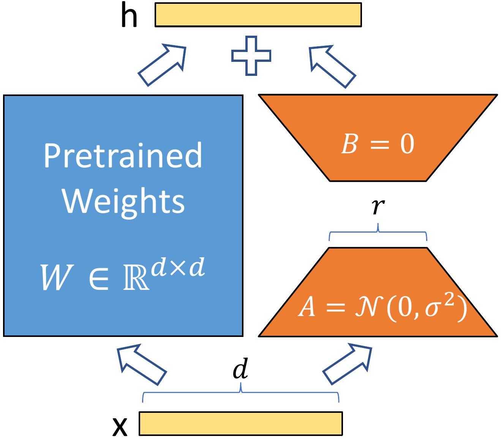

Fine-tuning without the fine-tuning bill.
On this page
How do you teach a giant model a new trick without retraining the whole thing? You know me, I do not like paying for compute twice.
Full fine-tuning a transformer is simple and brutal. A transformer is a stack of blocks that processes a sequence, where each block first lets the positions exchange information with each other and then processes each position on its own, and that stack is the model this whole page modifies. You take all 110 million parameters, the learned numbers that make up the model's weights and that training adjusts, you update all of them, and you keep one full copy of the weights per task. Ten tasks means ten copies of the model on disk. Worse, the optimizer keeps two extra numbers per parameter (Adam momentum and variance, where Adam is the optimizer that runs training and those two numbers are a running average of the direction each parameter has been moving and a running measure of how spread out its recent steps have been), so training needs roughly three times the model size in GPU (graphics processing unit, the chip that trains large models fast) memory just to hold the state. And there is the quiet part nobody likes to admit: the model learns your new task and starts forgetting the old ones. That is catastrophic forgetting, and it is exactly what it sounds like.
Adapters flip the deal. Freeze the big model, bolt on tiny trainable modules, and train only those. The backbone never moves. You keep one frozen copy of the model and swap in a small adapter per task, like changing lenses on a camera instead of buying a new camera body.
The original idea (Houlsby et al.) is almost embarrassingly simple. Inside each transformer layer, after the attention block, where each position mixes in information from the other positions, and after the feed-forward block, which processes each position on its own without mixing anything across positions, you insert a small two-layer MLP (multilayer perceptron) with a bottleneck. The hidden state, the vector of numbers that carries one position's information through the layer, is 768 numbers wide. You squeeze it down through a 64-wide hallway and expand it back. The squeeze is the whole trick: the hallway is the only thing that learns.
The authors were trying to solve the many-tasks problem. A pretrained model is one that was already trained beforehand on a large general body of text, so its weights already carry useful language knowledge before any task training starts. Fine-tuning a large pretrained model works well, but it is parameter inefficient: with many downstream tasks, the later tasks the pretrained model gets adapted to after its general training, you need an entire new copy of the model per task.
Their alternative is transfer with adapter modules. The base network stays frozen, each task gets a few small trainable modules, and new tasks can be added without revisiting the old ones.
They demonstrate it by transferring BERT (Bidirectional Encoder Representations from Transformers, a large pretrained language model that had already learned from general text) to 26 diverse text classification tasks including GLUE (a standard suite of language-understanding tests): adapters land within 0.4% of full fine-tuning while adding only 3.6% parameters per task, against 100% for fine-tuning. That is the idea this whole page is built on.
Here is the entire module. Down project, pass it through a nonlinearity, a bend that treats numbers unevenly instead of just scaling them, here the ReLU bend that passes positive values through unchanged and turns negative values to zero, up project, add it back to the input so the frozen signal flows through untouched if the adapter does nothing:
class SimpleAdapter(nn.Module):
def __init__(self, hidden_dim, bottleneck_dim):
super().__init__()
self.down_proj = nn.Linear(hidden_dim, bottleneck_dim)
self.relu = nn.ReLU()
self.up_proj = nn.Linear(bottleneck_dim, hidden_dim)
def forward(self, x):
return x + self.up_proj(self.relu(self.down_proj(x)))
The listing above, written as two lines: squeeze the input down to a small bottleneck, bend it with a nonlinearity, then lift it back up to full size.
In the listing above, down_proj, relu and up_proj are the three pieces of the first line, in that order, and adding the input back at the front of that same line is the second line.
Where do these things actually plug in? Here is one transformer block. The first frozen block in it is self-attention, the attention block from the paragraph above, where each position mixes in information from the other positions:
The big frozen blocks never change. Only the small adapters between them learn anything, so one backbone can host a different adapter per task.
Let me count the parameters out loud, because the numbers are the point. With a hidden size of 768 and a bottleneck of 64 (a bias, in these counts, is one learned number added to each output of a projection, on top of its weights):
Two percent. You train two percent of the model and leave the other 98 percent exactly where pretraining put it. That is why the model does not forget: the old knowledge is still sitting there, frozen, untouched.
And the training loop is one loop with a filter. Everything frozen except the adapters:
for name, param in model.named_parameters():
param.requires_grad = 'adapter' in name
768down_proj, relu and up_proj pieces in order, and the tool's stages 2 to 4 above.x the frozen input, untouchedWdown the squeeze: 768 numbers down to 64σ the ReLU bendWup the lift: 64 numbers back to 768h the learned nudgey the output: frozen input plus the nudge· times: scalingA forward pass through one bottleneck adapter, walked stage by stage. The frozen signal passes through untouched, and the trainable parameters all sit in the down and up projections: 98,304 weights plus 832 biases.
LoRA (low-rank adaptation) asks a different question. Instead of adding new modules, look at what fine-tuning actually does to a weight matrix. You start with the pretrained weight W and you end with W plus an update. The update is a big dense matrix, a matrix whose entries are filled in rather than mostly zero as in a sparse matrix, but it turns out the useful part of it lives in a tiny subspace, a small low dimensional slice of the full space of possible updates, rather than needing the whole space. So instead of learning the full update, you learn it as two skinny matrices multiplied together:
The idea is: freeze what the model already knows (W) and learn only the change, as a detour through a tiny bottleneck. A squeezes the signal down to rank r, B lifts it back up, and the two together add a small learned nudge on top of the frozen weight. The rank r is the whole budget: a smaller r means far fewer new parameters and a coarser approximation of the update.
Rebuilt from the LoRA paper's Figure 1, this picture holds the whole method.

Figure 1. Our reparametrization. We only train A and B. Reparametrization is the idea taught just above: instead of training the weight itself, you write the trained weight as the frozen W plus the learned BA detour, so the same weight gets expressed through the two small matrices. Rebuilt from Figure 1 of Hu et al. (ICLR 2022). arXiv:2106.09685
Written as one line, the effective weight is the frozen weight plus the side path:
The LoRALinear listing below runs this line: self.linear is W at work, and the side path that sends the input through A and then B is the BA side path, with W staying frozen and B starting at zero so BA = 0 at init. The code carries an extra scale factor that this line leaves out. That factor is alpha in the listing, used as alpha / rank: it multiplies the whole side path, so it sets how large the learned update is next to the frozen path, and turning alpha up strengthens the update without widening the rank hallway.
A starts from a random Gaussian, the N(0, σ²) written on the slab: each entry drawn from a bell curve centered at 0 with spread σ.B is initialized to exact zeros: so at step one the side path contributes nothing.BA into W once.The r brace between the slabs is the rank, the entire budget of new parameters: r times (d + k) numbers against d times k in the full weight, where d is the size of the input and k the size of the output.
Now the numbers. Take a 768 × 768 attention projection at rank 8: A holds 6,144 parameters and B holds 6,144, so the whole update is 12,288 parameters instead of 589,824 for the full matrix, about 2 percent of the matrix it modifies. The update is a shadow of the original weight, and a shadow is all you need.
1. Input goes in at the bottom, both paths feed the plus at the top.2. The blue box on the left is the pretrained weight W: input x feeds straight through it, exactly as it did before fine-tuning.3. The lower orange slab is A, the down-projection: it squeezes the input into the bottleneck. Its σ, in the N(0, σ²) start from the list above, is the spread of the draw, a different σ from the adapter card above, where σ is the ReLU bend. The random start would be a problem except B fixes it.4. The upper orange slab is B, the up-projection: the zero start from the list above is why the model behaves exactly like the pretrained model at step one.5. The plus at the top merges the two paths.6. Training wakes the side path up from zero: B leaves zero, the loss, the number training pushes down as a score of how wrong the model still is, falls as it learns, and before serving you fold BA into W once, so inference, running the trained model to answer new inputs instead of training it, runs like a normally fine-tuned model with no extra latency, no extra waiting time added to each answer.The code wraps a frozen linear layer and adds the low-rank path alongside it:
class LoRALinear(nn.Module):
def __init__(self, linear, rank=8, alpha=16.0):
super().__init__()
self.linear = linear
self.linear.weight.requires_grad = False # W stays frozen
in_dim, out_dim = linear.in_features, linear.out_features
self.A = nn.Parameter(torch.randn(rank, in_dim) * 0.01) # (r, d)
self.B = nn.Parameter(torch.zeros(out_dim, rank)) # (k, r), zero so BA = 0 at init
self.scale = alpha / rank
def forward(self, x):
return self.linear(x) + self.scale * (x @ self.A.T @ self.B.T)
In practice you wrap the query and value projections of each attention block and leave the rest frozen. A projection here is a learned matrix that turns each position into a new vector. The query is the vector a position uses to say what it is looking for, the key is the vector a position advertises so other positions can match against it, and the value is the vector a position offers to others if they attend to it, so adapting the query and value projections changes what positions look for and what they pass along. For a 12-layer, 768-wide model with r = 8 on query and value:
Rank is the dial that sets those numbers.
Here is the sweep, in words first. Pick a rank and count its parameters with the count formula above. Then compare the two task curves across ranks: as rank grows from 1 to 64, the easy and hard curves separate. The tool below puts rank on a log scale, a scale where each step multiplies the value instead of adding the same amount, so the doubling ranks 1, 2, 4, 8, 16, 32, 64 get equal spacing even though the gaps between them grow.
Accuracy versus rank, drawn from the same illustrative curves the tool below sweeps. Honest labeling: these curves are illustrative, not measured runs.
Rank is a dial, not a magic number. The easy task is done at r = 4 and never looks back. The hard task keeps buying accuracy with every notch, and at r = 64 you are training as many parameters as a bottleneck adapter, which is still only a sixth of the dense matrix. Pick the rank your task needs, not the biggest one that fits.
Start at 8, go up only if the loss says so.
The orange hallway is the only part that learns: a wider rank means a wider hallway and a bigger param bill. Right now r = 8: the hallway is 8 numbers wide and this one update costs 12,288 params. At r = 64 the hallway is 64 numbers wide, a twelfth of the 768-wide input.
Honest labeling: these curves are illustrative, not measured runs. They follow the well-known pattern: easy classification saturates at tiny rank, harder reasoning keeps gaining with rank. Your dataset will differ; the ordering is what is stable.
r = 4, and the hard task keeps buying accuracy with each higher rank.1 to 64, the easy and hard curves separate: the easy curve flatlines while the hard curve keeps climbing.A quarter of one percent of the model, and it usually lands within a point of full fine-tuning on classification-style tasks. That is stupid easy and gives you a fast win.
One more thing, and it matters at serving time: the frozen weight plus the learned update is just a matrix again. After training you can bake the update into W permanently and the model runs exactly as fast as the original. No extra layers in the graph, the connected chain of layers and operations the input runs through when the model answers, no latency cost. Bottleneck adapters cannot do this (their nonlinearity blocks the merge), so they stay in the graph forever.
Adapters are already small. Compacter asks whether the adapter's own matrices can be cheaper. The trick is the Kronecker product: instead of storing a big dense matrix, you store two small factors A and B and let their product stand in for it. Think of describing a tiled floor by one tile plus a repeat pattern instead of listing every tile.
The key property: each element of A scales a whole copy of B.
The authors were chasing a better trade-off than adapters alone could offer. Fine-tuning giant language models is sample inefficient, needing many training examples to learn well, unstable in low-resource settings, where only a little task data is available, and wasteful, since it stores a full copy per task. Existing parameter-efficient methods either still used a relatively large number of parameters or underperformed full fine-tuning.
Compacter builds on adapters, low-rank optimization, and a construction where each adapter weight matrix becomes a sum of Kronecker products between shared "slow" weights, the common factors reused across layers, and per-layer "fast" rank-one matrices, the small factors that differ for each layer, matrices that carry only one independent direction and so can be built from a single pair of vectors, so the big matrix is built out of small shared factors that are combined in a structured way instead of being learned entry by entry.
Training only 0.047% of the model's parameters, it matches full fine-tuning on GLUE and beats it on SuperGLUE, GLUE's harder successor suite, and in low-resource settings.
An 8 × 8 factor plus a 96 × 8 factor expands to a 768 × 64 adapter matrix, but you only store 832 numbers instead of 49,152.
You never build the big matrix; you apply it with a reshape and two small multiplications:
def kron_linear(x, A, B):
# computes x @ (A ⊗ B) without ever building A ⊗ B
# A: (m, n), B: (p, q), x: (batch, m*p) -> (batch, n*q)
X = x.view(-1, A.shape[0], B.shape[0])
return (A.T @ X @ B).reshape(x.shape[0], -1)
class CompacterAdapter(nn.Module):
def __init__(self, d_model=768, bottleneck=64, n=8):
super().__init__()
self.A = nn.Parameter(torch.randn(n, n) * 0.01) # shared factor
self.B_down = nn.Parameter(torch.randn(d_model // n, bottleneck // n) * 0.01)
self.B_up = nn.Parameter(torch.randn(bottleneck // n, d_model // n) * 0.01)
self.act = nn.ReLU()
def forward(self, x):
h = self.act(kron_linear(x, self.A, self.B_down)) # 768 -> 64
return x + kron_linear(h, self.A, self.B_up) # 64 -> 768
Sixty-one times fewer parameters for the same shaped module. The price is structure: the weight matrix is no longer fully free, it has to factor this way. In practice it holds up surprisingly well, but it is more finicky to tune than plain LoRA.
So what do you actually get? Representative numbers for sentiment classification (SST-2) on a BERT-base sized model, rounded from published adapter and LoRA runs. Treat these as the pattern, not gospel; your dataset will differ, but the ordering is stable. The last row needs one term explained before you read it. A soft prompt is a short set of learned vectors placed at the front of the input, in front of the real words, and only those vectors learn while the model itself stays frozen, so they steer the frozen model toward the task:
Read that again: 0.27 percent of the parameters, half a point of accuracy. That is the whole pitch of this page in one table.
500 examples, learning those few examples too closely instead of the pattern that carries to new examples. Validate like always.LoRA and Compacter are not the only way to keep the update small.
20K parameters. On base-size models it trails LoRA on SST-2, and it only pays off with a much bigger frozen model to steer.
Adapters shrink what you train. Quantization, storing each weight with fewer bits per number instead of at full precision, shrinks what you store: the frozen 98 percent of the model still has to live in memory at inference time. The quantization tutorial picks up where this one ends.
Parameter-Efficient Transfer Learning for NLP. ICML 2019. arXiv:1902.00751
LoRA: Low-Rank Adaptation of Large Language Models. ICLR 2022. arXiv:2106.09685
Compacter: Efficient Low-Rank Hypercomplex Adapter Layers. NeurIPS 2021. arXiv:2106.04647